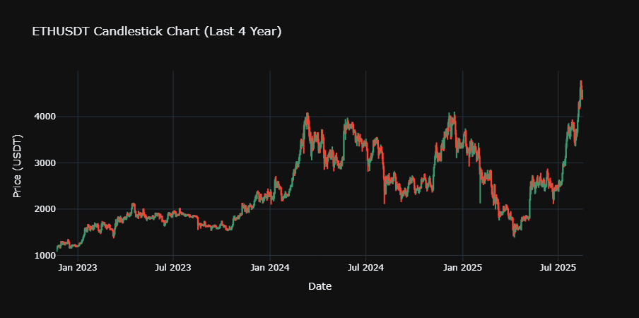

Projects
A showcase of selected works.
.png)
Financial data analysis usingjupyter notebook.
Tools: Python, Pandas, Seaborn, Matplotlib .
- Analyzed bank customer data to identify patterns in personal loan approval.
- Removed outliers using the IQR method, reducing skewness in features like income and experience.
- Created visualizations: histograms, boxplots, KDE plots, and correlation matrices.
- Derived insights about income, credit card spending, and education level influencing loan approval.
.png)
BTC vs ETH vs BNB Crypto Analysis
Tools: Python 3,Pandas – data manipulation, NumPy – numerical computations, Matplotlib & Seaborn – visualizations, Binance Data – historical crypto data .
This project analyzes the price trends, returns, volatility, and correlations of three major cryptocurrencies:Bitcoin (BTC),Ethereum (ETH) ,Binance Coin (BNB) Using historical data from Binance, we explore how these assets move individually and in relation to each other. This project is designed to showcase data analysis, visualization, and financial insights skills. Tools: Power BI.
View project
